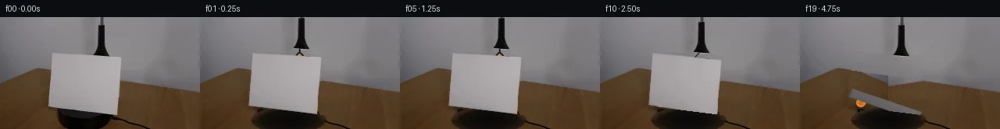

![首帧]()

Round 00
2026-11-04T23:22:18.725481+00:00像素候选变化代码 +387/−0inspection 更新
pixels 4c13ed5469cab62a · code 4d70cc507fb09e90
查看本轮 generate.py 真实 diff
--- previous/generate.py
+++ current/generate.py
@@ -0,0 +1,387 @@
+"""PixelWorld case_0006: blue-black grabber lowers an orange tennis ball behind a
+clockwise(yaw)-rotating cardstock on a black turntable. Local pixel synthesis only
+(numpy / PIL / scipy). Frame 00 is the untouched first frame."""
+from pathlib import Path
+import numpy as np
+from PIL import Image, ImageDraw
+from scipy import ndimage
+
+CASE = Path(__file__).parent
+SRC = np.array(Image.open(CASE / 'first_frame.png').convert('RGB'))
+H, W, _ = SRC.shape
+SS = 4 # supersampling factor
+rng = np.random.default_rng(6)
+
+# ---------------------------------------------------------------- geometry
+FACE = [(67.3, 45.9), (151.0, 50.7), (151.0, 125.0), (62.3, 114.1)]
+STRIP = [(151.0, 50.7), (156.0, 51.0), (150.2, 111.5), (147.8, 116.0)]
+CX, CY = 109.0, 84.5
+HW, HH = 44.0, 39.5
+ELL = dict(cx=113.0, cy=132.0, rx=48.0, ry=17.0)
+REST = (78.0, 110.0)
+
+def seam_y(x):
+ return np.where(x < 52, 85.0 - 0.365 * x, 58.2 + 0.149 * x)
+
+def poly_mask(pts, shape=(H, W), dilate=0.0, ss=SS):
+ """Soft coverage mask for a float polygon (1=inside)."""
+ h, w = shape
+ img = Image.new('L', (w * ss, h * ss), 0)
+ d = ImageDraw.Draw(img)
+ d.polygon([(x * ss, y * ss) for x, y in pts], fill=255)
+ if dilate:
+ img = img.filter(ImageFilter.MaxFilter(int(round(dilate * ss)) | 1))
+ m = np.asarray(img.resize((w, h), Image.LANCZOS)).astype(np.float32) / 255.0
+ return m
+
+from PIL import ImageFilter
+
+yy, xx = np.mgrid[0:H, 0:W].astype(np.float32)
+br = SRC.mean(2).astype(np.float32)
+sat = (SRC.max(2).astype(np.float32) - SRC.min(2).astype(np.float32))
+
+# ---------------------------------------------------------------- sprites
+def card_alpha():
+ a = np.maximum(poly_mask(FACE), poly_mask(STRIP))
+ # polygon boundary is precise; drop non-card pixels (tool flare, platform)
+ bad = (br < 100) | (sat > 42)
+ a = np.where(bad, 0.0, a)
+ a = ndimage.gaussian_filter(a, 0.55)
+ a[(a > 0) & (a < 0.35)] = 0.0
+ return np.clip(a, 0, 1)
+
+def tool_alpha():
+ x, y = xx, yy
+ b = SRC[..., 2].astype(np.int32); r = SRC[..., 0].astype(np.int32)
+ m = ((br < 78) | ((y < 13) & (br < 120)) |
+ (((b - r) > 3) & (br > 95) & (x > 118) & (x < 134) & (y < 12)))
+ m &= (x > 100) & (x < 150) & (y < 54)
+ m = ndimage.binary_closing(m, iterations=1)
+ m = ndimage.binary_dilation(m, iterations=1)
+ a = ndimage.gaussian_filter(m.astype(np.float32), 0.6)
+ return np.clip(a, 0, 1)
+
+CARD_A = card_alpha()
+TOOL_A = tool_alpha()
+
+footprint = np.clip(
+ poly_mask(FACE, dilate=1.1) + poly_mask(STRIP, dilate=1.1) +
+ np.clip(ndimage.gaussian_filter(TOOL_A, 1.2), 0, 1) * 1.0 +
+ (ndimage.grey_dilation(TOOL_A, size=(5, 5))), 0, 1)
+footprint = ndimage.grey_dilation(footprint.astype(np.float32), size=(3, 3))
+
+# ---------------------------------------------------------------- background plate
+def wall_model():
+ """Quadratic robust colour fit of the wall + smoothed residual field."""
+ seam = seam_y(xx)
+ valid = ((yy < seam - 3) & (br > 90) & (sat < 45) &
+ ~((xx < 20) & (yy > 55)) & (footprint < 0.15))
+ X = xx[valid]; Y = yy[valid]
+ Feat = np.stack([np.ones_like(X), X, Y, X*X, Y*Y, X*Y], 1)
+ coef = []
+ wgt = np.ones(len(X))
+ rgb = SRC.astype(np.float32)
+ for ch in range(3):
+ z = rgb[..., ch][valid]
+ for _ in range(4):
+ Wm = Feat * wgt[:, None]
… diff truncated; 300 more lines …